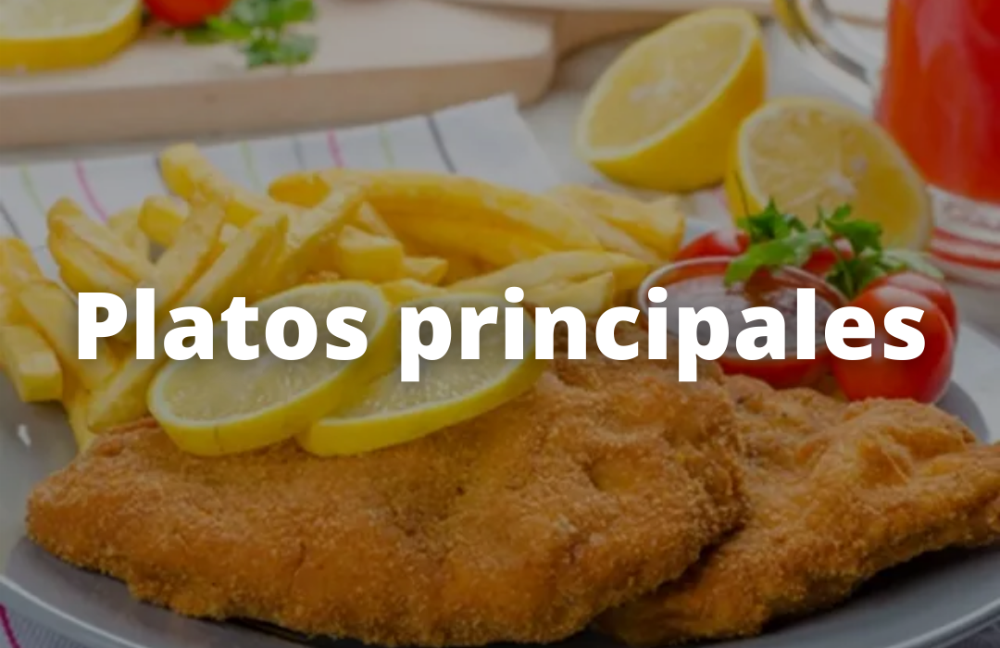

Que son los platos principales:
El plato principal o segundo plato de una comida (almuerzo o cena), es el segundo de los dos tiempos que se sirven en un menú tradicional europeo. Por lo tanto, prosigue al primer plato o entrante, y precede al postre.El plato principal de un menú se considera el plato más contundente (por ello se le denomina también «plato fuerte»), el más complejo o elaborado, así como el más sabroso. Suele estar compuesto de carne, pescado o verdura. Los platos precedentes suelen ser de menor tamaño e importancia, por regla general está compuesto de sopas, ensaladas y/o aperitivos diversos.
